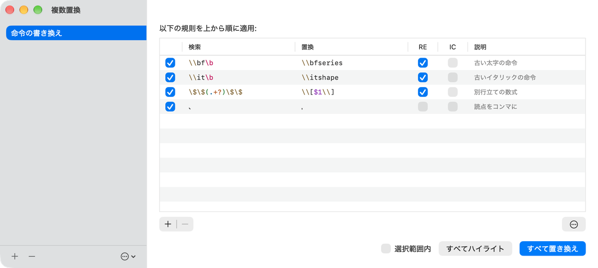
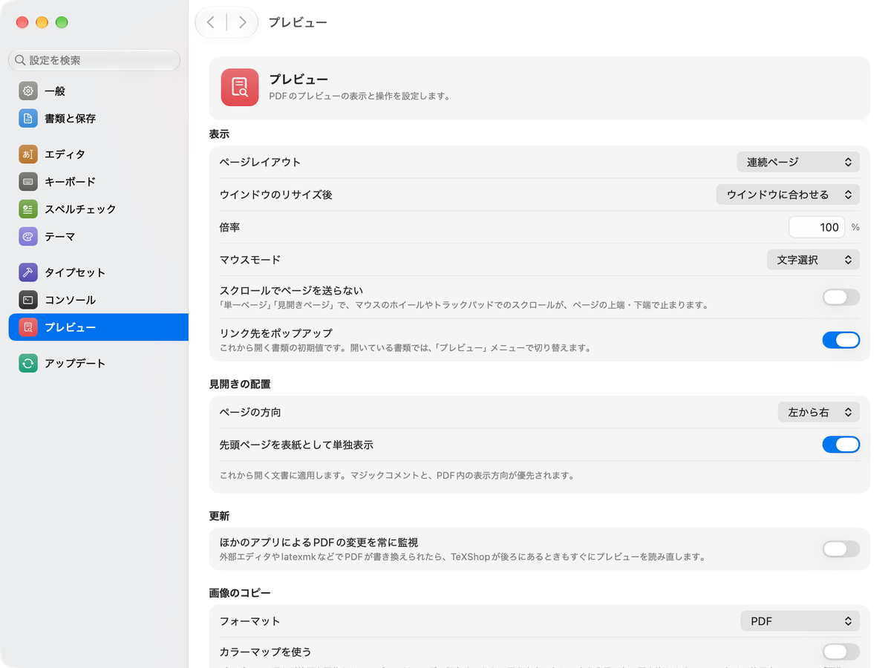
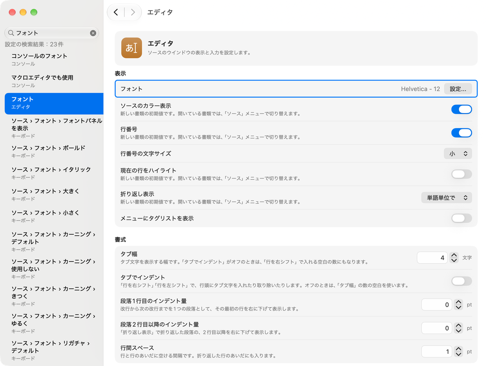
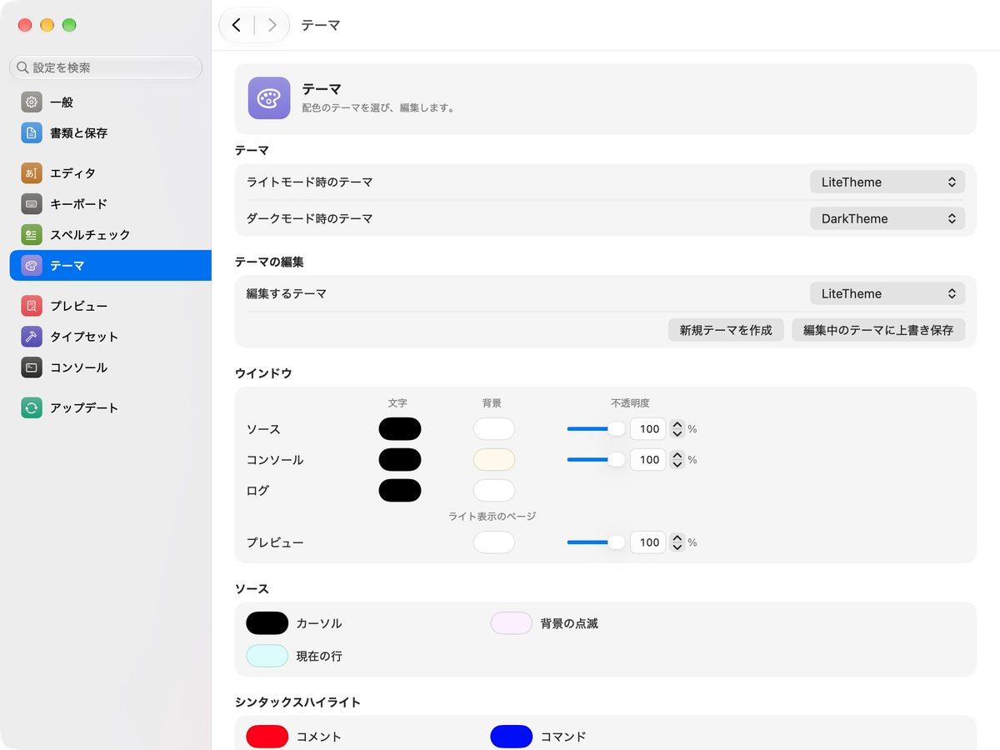
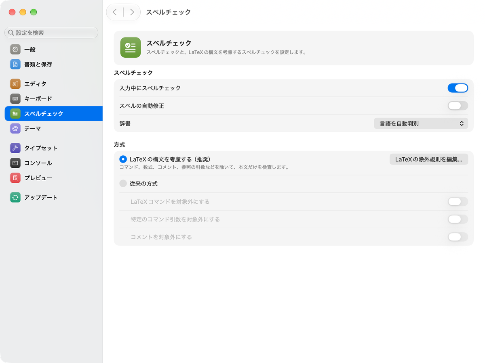
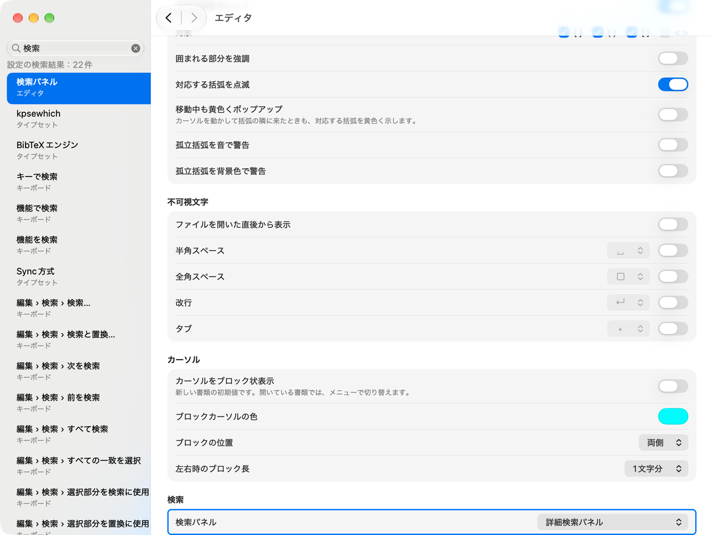

TeXShop 6.00
準備中 · 最新のベータを試す
TeXShop 6.00は、TeXShop 5.59の次の版です。詳細検索パネル、LaTeXの構文を考慮するスペルチェック、固定できるリンクのポップアップ、新しい設定画面を加え、分割したプレビューウインドウの動きを改め、多くの不具合を修正しました。以前の版と動きが違う点と、以前の動きに戻す方法は、「以前の版から変わった動き」にまとめました。
主な変更
- 詳細検索パネル：正規表現を使える検索と置換のパネルです。すべての一致の一覧、すべての一致の強調、検索と置換の組を保存してまとめて適用する「複数置換」を備えます。
- LaTeXの構文を考慮するスペルチェック：TeXのコマンド、コメント、数式と、ラベルやキーなどの引数を飛ばして検査します。
- 固定できるリンクのポップアップ：Optionキーで内部リンクのポップアップを固定できます。固定したポップアップは、動かす、大きさを変える、スクロールすることができます。
- 設定画面：10の分類、設定の検索、メニューのショートカットとキーバインドの編集、TeXとGhostscriptの自動検出を備えます。
- 中止：「中止」を押したときと、次のタイプセットを始めたときに、TeXとその子プロセスを止めます。
詳細検索パネル
- 新しい検索と置換のパネル「詳細検索パネル」を追加しました。正規表現が使えます。「設定」→「エディタ」の「検索パネル」で選べます。編集メニューの「検索」に「すべて検索」「すべての一致を選択」「選択部分を置換に使用」「置換して次を検索」「すべてハイライト」「ハイライトを削除」が加わり、キーは「設定」→「キーボード」で変えられます。置換は
$1とOgreKit式の\1のどちらでも書けます。
- 「すべて検索」で、すべての一致を行とともに一覧にできます。行をクリックするとその一致へ移ります。
- 「すべてハイライト」で、すべての一致を本文に示せます。「ハイライトを削除」で消えます。
- 「複数置換」で、保存した検索と置換の組を上から順にまとめて適用できます。取り消しは1回です。組は「複数置換を編集…」かパネルの「複数置換…」ボタンで編集し、CotEditorの置換定義と同じ形式で保存します。Unicode文字とajmacrosの命令を相互に変換する見本の組を同梱しました。

- 検索欄と置換欄は等幅フォントとテーマの色で表示し、正規表現の部分ごとに色を分けて、誤りを示します。「正規表現」の右の「?」で書き方の早見表を開けます。
- 時間のかかる処理は裏で進み、キャンセルできます。
- コンソール、ログ、「実験」のウインドウでも検索できます。
LaTeXの構文を考慮するスペルチェック
- Ralph Martin氏の提案をもとに、LaTeXの構文を考慮するスペルチェックを追加しました。TeXのコマンド、コメント、数式、参照などの引数を飛ばして本文を検査します。Experimentのソースも同じように検査します。

- 書類の中で切り替えた別の言語の部分や、書類で定義したマクロの中の文章も検査できます。
- 飛ばす規則を編集でき、「すべて変更」で書類中の同じ語をまとめて置き換え（取り消しは1回）、現在の書類で誤って学習した語を学習解除できます。
- Ralph Martin氏の提供により、amsmath、graphicx、xcolor、tikz、hyperref、biblatex、siunitxなど、よく使うパッケージのコマンドの、キー・ラベル・長さ・色などの文章でない引数を検査しないようにしました。
- Herb Schulz氏の提案と、PR #40でのRalph Martin氏の提供により、amsthmの
\newtheoremstyleの引数を検査しないようにしました。 - Ralph Martin氏の提案により、スペルチェックパネルで候補をクリックすると、「すべて変更」の置換に使えるようにしました。
- Ralph Martin氏の提案により、書類を編集したあとにスペルチェックパネルの「変更」を押しても、違う文字列を置き換えないようにしました。
- Herb Schulz氏の報告により、「設定」→「スペルチェック」の辞書を、
en_GBのような記号ではなく、English (United Kingdom)のように言語の名前で表示するようにしました（#32）。 - Herb Schulz氏の報告により、「設定」→「スペルチェック」で選んだ辞書が、開いている書類にもすぐに効くようにしました（#32）。
- 長い書類や分割したソース画面でも、スペルチェックが速くなりました。
プレビュー
- Optionキーで内部リンクのポップアップを固定し、内容を説明しながら、動かす、大きさを変える、スクロールする、文字をコピーすることができるようにしました（#10、#14）。固定している間もほかのリンクのポップアップは出ます（#35、#31）。Uwe Schmock氏の提案と報告によるものです。

- Uwe Schmock氏の提案により、内部リンクのポップアップが、リンク先の本文の段を読みやすく表示するようにしました（#12）。
- Uwe Schmock氏の提案により、ページの端にあるリンク先でも、ポップアップに周りの本文を表示するようにしました（#7）。
- Uwe Schmock氏の提案により、連続表示では、リンクのポップアップがリンクのそばの本文を隠さず、次のページへ続けて表示するようにしました。ページ区切りで分かれた定理なども一つのポップアップで読めます（#14）。
- Uwe Schmock氏の提案により、内部リンクのポップアップに、リンク先のページのラベルを「157 ページ」のように表示するようにしました（Skim と同じ）（#17）。
- Uwe Schmock氏の提案により、Controlキーを押しながら内部リンクにポインターを載せると、そのリンクだけ「リンク先をポップアップ」を逆にできるようにしました。ポップアップを出さずにControl＋クリックでコンテキストメニューを開けます（#30）。
- Uwe Schmock氏の提案により、内部リンクのコンテキストメニューに「ウインドウを分割してリンク先を表示」を加えました。リンクを見たまま、分割したもう一方の部分にリンク先を表示できます（#31）。

- Uwe Schmock氏の提案により、「内容の幅に合わせる」を追加しました。余白を除いた本文がプレビューの幅いっぱいになります。「内容に合わせる」とともにツールバーに置けます（#33）。
- プレビューのツールバーに「ページレイアウト」と「見開きの配置」のメニューを置けるようにしました。現在の書類のレイアウト、ページの方向、表紙の表示を変えられます。
- Uwe Schmock氏の提案により、分割したプレビューウインドウの境界線をドラッグしても、ウインドウの大きさを変えても、それぞれの部分の上端の内容が動かないようにしました（#24）。
- Uwe Schmock氏の提案により、「ビューを切り替え」で、分割したプレビューウインドウの二つの部分を、大きさ・表示位置・倍率ごとそっくり入れ替えるようにしました（#25）。
- Uwe Schmock氏の報告により、分割したプレビューウインドウで、ドロワーのアウトラインが作業中の部分に従うようにしました（#25）。
- Uwe Schmock氏の提案により、分割したプレビューウインドウで、作業中の部分に細い線を引くようにしました（#14）。
- Uwe Schmock氏の提案により、ツールバーの分割ボタンの絵で、上下に分けるか左右に分けるかが分かるようにしました（#14）。
- Felix Finster氏の提案により、ソースとプレビューを一つにしたウインドウを、前に境界線を動かした位置で開くようにしました（#26）。
- Uwe Schmock氏の提案により、ドロワーのアウトラインで開いた章や節とスクロール位置を、タイプセットし直しても保つようにしました（#19）。
- svb-bit氏の提案により、「設定」→「プレビュー」→「表示」の「スクロールでページを送らない」で、単一ページ・見開きページの表示のスクロールをページの端で止められるようにしました（#9）。

- latexmkなどのほかのアプリがPDFを書き換えたとき、TeXShopに戻ると同じ位置のまま再読み込みするようにしました。「ほかのアプリによる PDF の変更を常に監視」（旧「プレビューの自動更新」）をオンにすると、TeXShopが後ろにあるときも再読み込みします。
- svb-bit氏の報告により、拡大鏡がプレビューのどの倍率でも働くようにしました（#9）。
- 拡大鏡が、切り抜いたPDFでもポインターの下を写し、画面上で同じ大きさを保ち、「実験」のプレビューでも使えるようにしました。
編集
- Nicolas Martignoni氏の提案により、Command＋0で書類のコンソールを表示し、もう一度押すとソースかPDFのウインドウに戻れるようにしました（#2）。
- 行番号をクリックまたはドラッグして、行全体を選択できるようにしました。ソース、ログ、Experimentのソースで使えます。
- 編集メニューの「文字種一括変換」で、選択範囲をひらがなとカタカナ、全角と半角、Unicode文字とajmacros・
\UTF・\CIDのコマンドのあいだで変換し、全角引用符をTeXの引用符に変換できるようにしました。 - 編集メニューの「Unicode 正規化」で、NFC、NFD、NFKC、NFKDと、CJK互換漢字を変えないModified NFC・Modified NFDを適用できるようにしました。
- 編集メニューの「交換ペースト」で、選択範囲をクリップボードの文字列で置き換え、置き換えた文字列をクリップボードに入れられるようにしました。
- マクロとキーバインドで、
#PASTE#でクリップボードの文字列を入れられるようにしました。 - マクロエディタの内容をソースと同じようにテーマの色で色分けし、マクロのプレースホルダを、キーバインドの一覧と同じく「選択中の文字列」のような札で表示するようにしました。内容の下の「挿入」メニューで入れられ、その右の「?」で一覧を見られます。

- 日本語の文章でASCIIと見分けにくい全角英数字・記号とマイナス記号を、「設定」→「テーマ」→「強調表示」の「全角英数記号」の色で示せるようにしました。

- 文字コードのマジックコメントがないファイルも、Unicode、日本語・中国語・韓国語などの文字コードを判定して開くようにしました。
- Uwe Schmock氏の報告により、「実験」の処理を専用のコンソールで行い、書類のタイプセットと干渉しないようにしました（#8）。

- Uwe Schmock氏の提案により、「実験」のタイプセットで、書類の画像などのファイルを見つけ、書類を最後に組版した結果から
\ref・\pageref・\citeを解決するようにしました（#8）。 - Uwe Schmock氏の提案により、「実験」の最初のタイプセットのあと、出力のあるページの上端を表示するようにしました（#20）。
- 「実験」のソースを、フォント・色分け・行番号・不可視文字などを含め、書類のソースと同じように表示するようにしました。
- 「実験」のウインドウにも、テーマの色とウインドウの不透明度を使うようにしました。
- 「実験」のプレビューのツールバーに、「スクロール」「文字選択」「拡大鏡」「範囲指定」のツールと倍率のボタンを加えました。
設定画面
- 設定画面を、「一般」「書類と保存」「エディタ」「キーボード」「スペルチェック」「テーマ」「プレビュー」「タイプセット」「コンソール」「アップデート」の10分類のサイドバーで構成しました。

- 「設定を検索」で、設定の項目を探して表示できます。
- 初めて起動したときと、「設定」→「タイプセット」の「パスの自動検出…」で、TeXとGhostscriptのインストール先を探し、バージョンとともに一覧から選べるようにしました。

- 「MakeIndex」と「MetaPost」のコマンドを「設定」→「タイプセット」→「周辺ツール」で設定できるようにしました。エンジンのプロファイルもこれらを設定し、日本語のプロファイルでは日本語用のプログラムになります。

- 「設定」→「タイプセット」の「代替エンジン」を、組み込みのプログラムとエンジンファイルのメニューから選べるようにしました。
- 「設定」→「キーボード」でメニューのショートカットを変えられます。機能でもキーでも探せ、新しいショートカットはキーを押して登録し、1つずつでもまとめてでも元に戻せます。使われているキーは知らせます。マクロエディタでも同じようにマクロのショートカットを設定でき、Commandを含まないControlの組み合わせやF1〜F20も使えます。

- キーバインドを、「キーバインドエディタ」の窓ではなく、「設定」→「キーボード」の一覧で編集するようにしました。
#SEL#などのプレースホルダは札で表示し、「挿入」メニューで入れられます。 - 「キーボード」にはコマンド補完と、「ソース」メニューから移したコマンド補完ファイルの編集もあります。
- 「スペルチェック」では、除外規則を備えたLaTeXの構文を考慮する方式と、従来の方式を選べます。
- 「設定」→「アップデート」で、β版もアップデートとして受け取れるようにしました。「アップデートを確認...」ボタンもあります。

- 「設定」→「書類と保存」で、オートセーブとバージョンをオフにし、保存前のファイルを
名前~として残せるようにしました。 - 「設定」→「プレビュー」→「表示」で、書類を開いたときにリンク先をポップアップするかを選べるようにしました。
- 「設定」→「プレビュー」で、見開き表示の先頭ページを表紙として単独で表示できるようにしました。
- 「設定」→「エディタ」で、色分けで@をコマンド名の一部と見なせるようにしました。
- 「設定」→「エディタ」で、書類を開いたときにexpl3の色分けをオンにできるようにしました。
- 「設定」→「エディタ」で、スペース、全角スペース、改行、タブの不可視文字マーカーをメニューから選べるようにしました。
- テーマの色を8つのグループに整理し、新しいテーマの名前をシートで入力するようにしました。

- 再起動後や新しい書類から効く設定には、黄色の警告記号で知らせます。
- 倍率設定は新しいPDFに、ソースとコンソールのフォントは開いている窓にも効きます。
- ウインドウの不透明度を、スライダー、数値欄、矢印ボタンで変えられます。
- 文字色や背景色など、常に不透明で描く色では、不透明度を選ばないようにしました。
- 「設定」→「プレビュー」の「カラーマップを使う」と「文字色の強め具合」を「画像のコピー」の群に移し、10の設定に短い説明を付けました。
- 「設定」→「エディタ」→「書式」の数の欄に矢印ボタンを付け、数字だけを受け付けるようにしました。
- 「一般」からコメント行と隠し設定の説明を開けます。
アプリのアイコンと見た目
- LaTeX fetishist氏とNicolas Martignoni氏の提案により、従来の丸型アイコンをもとに、白い角丸の枠を付けた新しいアプリアイコンにしました（#3）。
- LaTeX fetishist氏の提案により、「設定」→「一般」で、歴代のデザインを含む5種類から起動中のDockアイコンを選べるようにしました（#3）。

- macOS 26以降では、ツールバーを Liquid Glass の外観で表示し、「タイプセット」を強調したボタンにしました。
- ethanphil4-a11y氏の報告により、プレビューのライト表示のページを、テーマのプレビューの背景色で再び塗るようにしました。「設定」→「テーマ」では「ライト表示のページ」の色です（#39）。
- Bruno Voisin氏の提案により、プレビューのツールバーの「戻る／進む」を macOS の「プレビュー」アプリと同じ山形のアイコンにし、移れないときは淡く表示するようにしました。

- プレビューのツールバーの「前のページ」「次のページ」を、「プレビュー」アプリと同じアイコンの1組にしました。
- Uwe Schmock氏の提案により、プレビューのツールバーのマウスモードの各ツールに、名前と働きを示すツールチップを付けました（#28）。
- Uwe Schmock氏の提案により、プレビューのツールバーの「戻る」「進む」に、それぞれのツールチップと翻訳した名前を付けました（#34）。
- 同梱のテーマに、それぞれの配色に合うexpl3の色を設定しました。
- 同梱のテーマDracula・TransparentTheme・SolarizedLiteで、括弧やマーカーを読みやすい色にしました。
~/Library/TeXShop/Themesにある既存のテーマは色が変わりません。 - 行番号をシステムの等幅フォントで表示し、桁がそろうようにしました。
- ダイアログのボタンを、AppleのHuman Interface Guidelinesに沿って配置しました。マクロエディタは、複数置換の窓と同じく一覧の下に帯を置き、内容をソースと同じフォントで表示します。
- すべての言語で、画面の文字をシステムフォントで表示し、欠けていたラベルを全体まで表示するようにしました。
- いくつかの窓と言語で、欠けたり重なったりしていた文字と選択肢をすべて表示するようにしました。
- 「実験」のコンソールの入力欄、スペルチェックパネルの置換欄、数値の欄が重ならずに表示されるようにしました。
- 「実験」のソースの下のバーを細くし、「タイプセット」ボタンを小さくしました。
- OgreKitの検索パネルのボタンが、どの言語でも重ならないようにしました。
- 各言語の設定画面で、部品の重なり、文字切れ、結び付けの誤りを直しました。
以前の版から変わった動き
- スペルチェック：LaTeXの構文を考慮するスペルチェックが初めから有効です。以前のように検査するには、「設定」→「スペルチェック」で「従来の方式」を選んでください。

- 検索：このバージョンを初めて起動したとき、すべての利用者が一度だけ詳細検索パネルに切り替わります。元に戻すには、「設定」→「エディタ」の「検索パネル」でほかの方式を選びます。OgreKit検索パネルは「レガシー」としました。

- 設定プロファイル：「設定プロファイル」を、「設定」→「タイプセット」の「エンジンのプロファイル」に置き換えました。プロファイルは、TeXエンジンごとのタイプセットのコマンド、BibTeXエンジン、索引作成とMetaPostのコマンド、otfパッケージの
\UTF/\CIDへの自動変換を設定します。日本語のプロファイルは、新しい書類のエンコーディングをUTF-8にし、辞書を「言語を自動判別」にし、UTF-8-MACの変換もオンにします。ほかの設定は変えません。適用する前に、設定される値が一覧になり、変わる値に印が付きます。今の設定を残したい値は外せ、latexmkを使うかどうかも選べます。以前のプロファイルで変えた設定はそのまま残ります。
- タイプセットの設定：「設定」→「タイプセット」の「デフォルトのコマンド」を「新しい書類のタイプセット」に、「利用するコマンド」をエンジンファイルを選ぶ「エンジンファイル」のメニューにしました。最初に選ばれるエンジンファイルはXeLaTeXからLuaLaTeXになりました。LaTeXと対になるTeXは、「タイプセット」メニュー、ツールバー、設定で「plain TeX」と表記します。
- プレビューの矢印キー：svb-bit氏の提案により、単ページ・見開き表示で、上下矢印キーは拡大したページの中をスクロールし、ページを送らないようにしました。ページを送るには、Command＋右／左矢印、Page Up／Page Down、スペースキーを使います（#9）。
- macOSで設定したメニューのショートカット：一部のメニュー名が変わったため、macOSの「システム設定」で登録したTeXShop用のショートカットが効かなくなることがあります。「設定」→「キーボード」で設定し直してください。
- マクロのショートカット：マクロのショートカットは、マクロエディタでキーを押して設定するようになり、Commandを含まないControlの組み合わせやF1〜F20も使えます。以前の版で保存したショートカットはCommand付きのままです。
- マーク：マークの操作を「編集」→「マーク」に移しました。「メモ付きマークを挿入」は常にメニューにあります。
- コマンド補完：「ソース」メニューの「コマンド補完」サブメニューを、同じショートカットの1項目「コマンド補完リストに追加」にしました。
- スタイルファイルを開く：「ヘルプ」メニューから「ファイル」メニューへ移しました。
- Apple Distiller：macOS 14にないため選択肢を取り除き、PostScriptはGhostscriptで変換します。
- テキストとラインアートを滑らかに表示：この設定を取り除きました。PDFの中の画像は常に滑らかに表示します。
- 古い設定：旧PDFSyncの選択肢と効果のない設定を取り除きました。
- 旧バージョンの設定から移行：以前の版の色の設定からテーマを作る、「設定」→「テーマ」のボタンをなくしました。
\UTFコマンド：utf.styの書き出しで書いた\UTFコマンドを、ファイルを開くときに文字に戻すようにしました。- 改行コード：開いたファイルの改行コードがWindows形式（CRLF）、旧Mac形式（CR）、またはそれらの混在の場合に、改行をLFに揃えたことを知らせるようにしました。この通知はファイルごとに止められます。

不具合の修正：タイプセットとコンソール
- 重大な不具合の修正：「中止」を押してもTeXの処理が残る問題を修正しました。TeXとその子プロセスを止めます。次のタイプセットを始めたときも、前の処理を止めます。
- TeXの実行中や入力待ちのときも、コンソールの出力を選択してコピーできるようにしました。Experimentのコンソールも同じです。
- コンソールの出力欄でReturnを押すと、空の入力欄でReturnを押したときと同じくTeXに答えるようにしました。Experimentのコンソールも同じです。
- 文字コードが混じったり文字が壊れたりしたコンソール出力とログを、正しく表示するようにしました。
% !TEX rootの行があるファイルからタイプセットしたとき、ルート書類のプレビューでCommand＋1を押すと、そのファイルに戻るようにしました。- 組版ツールを起動できないときの処理を改善し、中止で待ち続けることがないようにしました。
- 書類で指定したTeXのルートファイルが見つからないときに、シートで知らせるようにしました。
- 残った
.synctex.gz(busy)ファイルも、補助ファイルと一緒に削除するようにしました。
不具合の修正：プレビュー
- svb-bit氏の報告により、macOS 26・macOS 27でも、再読み込みのあとにプレビューの位置を保つようにしました（#9）。
- svb-bit氏の報告により、macOS 27で、拡大したページを別のページや検索・SyncTeXの結果へ移しても、左右の位置を保つようにしました（#9）。
- Uwe Schmock氏の報告により、分割・分割解除や「ビューを切り替え」で、プレビューの表示が少しずつずれないようにしました（#23）。
- Uwe Schmock氏の報告により、スクロールしたとき、リンクのポップアップの周りにリンク先のページの一部が見える問題を修正しました（#21）。
- Uwe Schmock氏の報告により、タイプセット中にプレビューを閉じて開き直しても、表示位置を保つようにしました（#5）。
- SyncTeXで、行頭や分割したエディタ、エイリアスのファイルでも、クリックした場所へ移るようにしました。
- プレビューの再読み込みで落ちる問題を修正しました。
- ページがウインドウより大きいときの、スペースキーとShift＋スペースキーのスクロールを修正しました。
- 新しいプレビューのウインドウが、前面のプレビューにぴったり重ならないようにしました。
不具合の修正：書類の読み書き
- Steuard氏の報告により、OneDriveやGoogle Driveなどで同期しているフォルダのファイルを編集しているとき、カーソルがファイルの末尾へ飛んだり、打った文字が消えたりする問題を修正しました（#29）。
- Tom氏の報告と提案により、ルーマニア語で書類の窓が再び開くようにしました（#42）。
- ほかのエディタが保存したあとも、ソースファイルの変更に気付き続けるようにしました。PR #1のDaisuke Nishihama氏による貢献を含みます。
- UTF-8のファイルのBOMと、UTF-16のファイルのバイト順を保って保存し、UTF-16のファイルでも文字コードのマジックコメントを使えるようにしました。
- GB 2312のファイルを正しく読めるようにし、指定の文字コードで読めなかったファイルが保存で壊れないようにしました。
- 日本語の文字コードで、バックスラッシュとチルダを必ずTeXが読める文字で保存するようにしました。
- 認識できない文字コード名のときはUTF-8で開いて知らせ、プロジェクトファイルをUTF-8で書き出すようにしました。
- 保存ダイアログの文字コードのメニューが効くようにし、「設定」→「書類と保存」から表示できるようにしました。
- 「UTF-8-MAC を UTF-8 に自動変換」が有効なとき、CJK互換漢字だけの書類が空のファイルで保存される問題を修正しました。
- utf.styの書き出しで、結合文字の前の改行が失われる問題を修正しました。
- 「デフォルトエディタに設定」が
.texファイルに効くようにしました。 - 空の書類、単独の引用符、保存で起きるエラーを修正しました。
不具合の修正：編集とその他
- Herb Schulz氏の報告により、長い書類でも、スペルパネルが見つけた綴りの誤りを見える位置に表示するようにしました（#38）。
% !TEX spellcheck行のあるファイルを開いても、ほかの書類の言語が変わらないようにしました。- Uwe Schmock氏の報告により、コメント行の途中で改行したとき、次の行に送られた文字がコメントの色のまま残る問題を修正しました（#16）。
- 閉じていない
\footnote・\cite・\indexの引数があっても、後ろの文字の色分けが消えないようにしました。 - 日本語入力が重くならないようにし、変換中の文字は確定するまで色を付けないようにしました。
- テーマの編集で、括弧とexpl3の色を正しく表示するようにしました。
- 制御文字を見える印で表示し、改ページ文字以降が表示されない問題を修正しました。
- 長い書類を開く、スクロールする、編集する操作を速くしました。
- 右から左に書く段落でも、左揃えを保つようにしました。
- ソースとプレビューを一つにしたウインドウで、「タグ」メニューの表示が英語にならないようにしました。
- HTMLウインドウの「ホーム URL」が効くようにし、既定でTeXShopのサイトを開くようにしました。
- いくつかの言語で、何もしなかったり違う働きをしたりしていた部品を直しました。スペイン語の画像を開く操作、フランス語のログウインドウ、ポルトガル語と中国語（簡体字）のツールバーの項目、韓国語と中国語（簡体字）のHTMLウインドウのURL欄、イタリア語のヘルプの項目、10の言語の行列パネルです。
- フランス語とポルトガル語（ブラジル）の注釈パネルのボタンを直し、英語の編集メニューに「Change Encoding」を入れました。
マニュアル・ヘルプ・同梱ツール
- Uwe Schmock氏の提案に基づき、マニュアルのRaiseHook例をhyperref 7.01q以降とamsmathの数式に対応させました（#6）。
- Uwe Schmock氏の指摘により、マニュアルとヘルプのリンクを現在のTeXShopのサイト（texshop.app）に改めました（#15）。
- Uwe Schmock氏の指摘により、マニュアルの発表の章からSkypeへの言及を削除しました（#11）。
- Ralph Martin氏の指摘により、クレジットの連絡先を現在の保守担当者に改めました（#13）。
- LaTeXの構文を考慮するスペルチェックのヘルプを追加し、ヘルプのリンク切れを修正しました。隠し設定の一覧も更新しました。
- 同梱するzlibを1.4、SyncTeXパーサーを1.21に更新しました。
- Herbert Schulz氏の提供により、同梱するlatexmkを4.89に更新しました。
- 展開したソースアーカイブから、TeXShopを再びビルドできるようにしました（#4）。